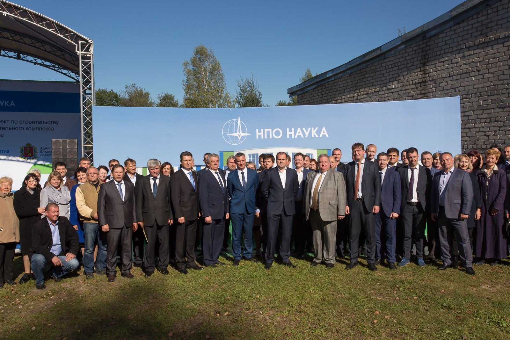
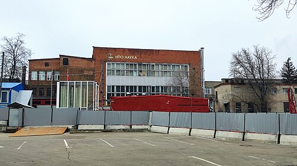
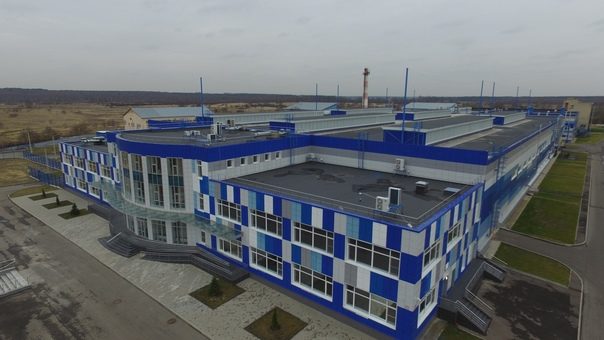

Научно-производственное объединение «Наука»
О компании
Научно-производственное объединение «Наука» – лидер в области создания систем и агрегатов кондиционирования, жизнеобеспечения, систем автоматического регулирования давления для авиационно-космической техники в России, а также для международных программ.
Год основания: 1931
Предприятие было образовано в 1931 году. В истории НПО «Наука» отражен весь путь развития отечественной авиации и космоса. На протяжении многих лет объединение является одним из ключевых разработчиков и производителей авиационных систем и агрегатов, предлагая заказчикам современные технологии и инновационные решения.
В компании работают высококвалифицированные специалисты, имеющие практический опыт работы в областях тепломассообмена, газодинамики, физико-химических процессов, механики, пневмо- и электроавтоматики, технологии и производства.
НПО «Наука» разработало, изготовило, испытало и ввело в эксплуатацию более 7000 наименований систем и агрегатов. Общее количество изделий, находящихся в эксплуатации, превышает 250 тыс. единиц.
Структура НПО «Наука» предусматривает непрерывный творческий процесс разработки, изготовления экспериментальных образцов, проведения сертификационных испытаний и серийное производство систем агрегатов по заказам отечественных и зарубежных партнёров.
Системами и изделиями «Науки» оборудована практически вся российская авиационная техника.
Компания имеет сертификаты, подтверждающие соответствие системы менеджмента качества применительно к деятельности по АТ и ВВТ.
Подробнее на официальном сайте: npo-nauka.ru
История
История предприятия начинается с конца XIX века от завода «Дукс», участвовавшего в создании первых российских самолётов.
В 1918 году после национализации «Дукс» был переименован в «Государственный авиационный завод № 1» (ГАЗ № 1). Впоследствии, в начале 1930-х годов было принято решение о выделении из состава ГАЗ № 1 ряда специализированных производств. Так 13 октября 1931 года был создан завод № 34 – сегодня ПАО НПО «Наука».
В 1934 году на заводе начался выпуск радиаторов для авиационных двигателей, так необходимых для расширяющегося самолётостроения.
В 1939 году при заводе создается конструкторское бюро, получившее в 1940 году статус особого конструкторского бюро по радиаторам (ОКБ-34), с 1942 года оно переименовывается в ОКБ-124. ОКБ занимается конструированием новых видов радиаторов и других теплообменных агрегатов.
После Великой Отечественной войны, во время которой предприятие занималось выпуском и ремонтом авиационных радиаторов, начинается планомерное расширение КБ и производства. В конце 1940-х – начале 1950-х годов разрабатываются и выпускаются новые изделия: кислородные системы, нагревательные устройства, регуляторы температуры и давления, турбохолодильники.
Появление реактивной авиации потребовало от ОКБ и завода создания целого ряда новых приборов и агрегатов для жизнеобеспечения экипажа и пассажиров в условиях высотных полётов.
С конца 50-х годов XX века начались работы над созданием систем кондиционирования воздуха и систем автоматического регулирования давления для самолётов и вертолётов. Эти системы успешно эксплуатируются на самолётах Ту-134, Ту-154, Ил-62, Ил-86, Ил-76, Ан-22, Ан-124, Ан-225, Ан-70, Ан-148 и др.
В последние годы созданы системы для объектов Ту-204, Ту-334, Ил-96, Ил-114, Ан-140 и т. д., в которых использованы новые технические решения, в частности:
3-колёсный турбохолодильник на газовых опорах,
высадка влаги на линии высокого давления,
утилизация влаги для интенсификации теплообмена,
модульное исполнение,
цифровые системы управления.
Космос
Созданные к началу космической эры конструкторская, производственная и испытательная базы позволили в сжатые сроки разработать все необходимые элементы систем терморегулирования, обеспечения газового состава, регулирования давления и водообеспечения обитаемых космических кораблей.
Гордость предприятия – созданный впервые в мире комплекс систем, обеспечивающих жизнедеятельность и нормальные условия полёта первого человека в космос на корабле «Восток».
Наверх